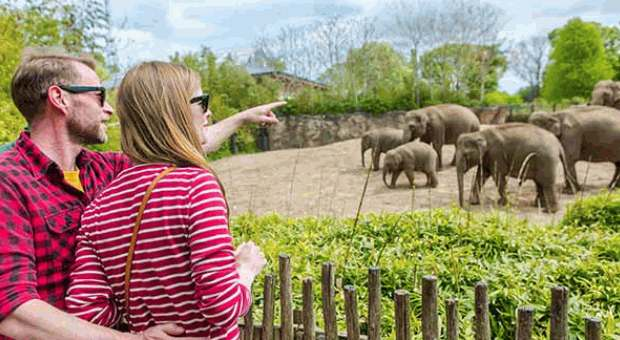
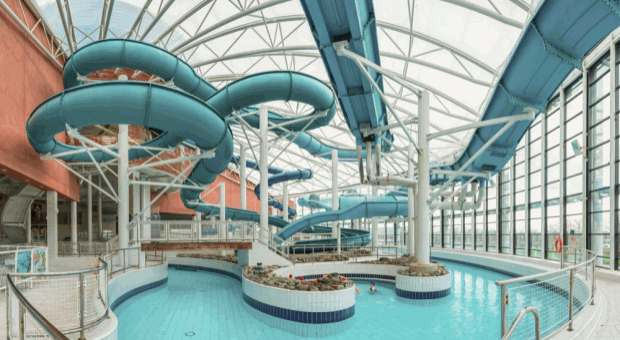

1. Guinness Storehouse, Dublin
Located at St. James's Gate Brewery, the Guinness Storehouse is the home of the Black Stuff, the heart of Dublin and an unforgettable element of any Irish adventure. An exciting visitor experience begins at the bottom of the world's largest pint glass, where you will learn the story of the beer's four ingredients: water, barley, hops and yeast. Your journey continues up through seven floors filled with interactive experiences that fuse Guinness' long brewing heritage with Ireland's rich history. At the top, you'll be rewarded with a pint of perfection in our world-famous rooftop Gravity Bar. Now that's our kind of higher education!
Annual Number of Visitors: 1,747,000
2. Cliffs of Moher, Co. Clare

You simply cannot travel to Ireland without paying a visit to the breathtaking Cliffs of Moher, situated in County Clare along the Wild Atlantic Way. The Cliffs of Moher have majestically faced the Atlantic for over 350 million years and their beauty is incomparable. The Cliffs are an area of outstanding natural beauty that is recognised as a UNESCO Global Geopark. Also, they are a haven for wildlife. Over 30,000 breeding bird pairs make the Cliffs their home annually, among them guillemots, razorbills, kittiwakes, peregrine falcons and the ever-popular puffins.
Annual Number of Visitors: 1,527,000
3. Dublin Zoo
Established in 1830, Dublin Zoo works in partnership with zoos worldwide to make a significant contribution to the conservation of endangered species. Located in Dublin's Phoenix Park and covering over 28 hectares, the zoo is home to around 400 animals across themed habitats. It’s where education and conservation combine for an exciting and stimulating day out for all the family.
Annual Number of Visitors: 1,264,300
4. National Aquatic Centre, Dublin
Located in the Dublin suburb of Blanchardstown, the National Aquatic Centre is Ireland's largest and most popular water park. The 2,500-capacity venue has won numerous awards, including Best Leisure Facility in Ireland. It has hosted Olympic training camps for teams from 16 different countries and 190 athletes, including Water Polo Champions, Croatia, and the U.S. Synchronised Swimming Team.
Annual Number of Visitors: 1,099,756
5. Book of Kells Exhibition, Trinity College, Dublin
Based at Trinity College in the heart of Dublin city, the Book of Kells Exhibition showcases Ireland’s greatest cultural treasure and the world’s most famous medieval manuscript. The Book of Kells, a 9th-century work, documents the four Gospels of the life of Jesus Christ. Visitors can also see the Long Room — a stunning library housing 200,000 of Trinity College's oldest books.
Annual Number of Visitors: 983,410